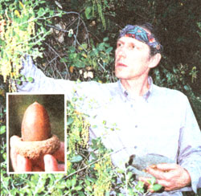
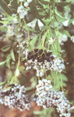
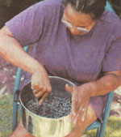

HOME REMEDIES
Wild medicines and foods.
The Oak Tree
Beech or Oak Family (Quercus sps.) (Fagaceae)
OVERALL SHAPE AND SIZE: Quercus is a large genus of more than 200 species including deciduous and evergreen trees and shrubs. A few of our common oaks are scrub oak, canyon oak, California or coast live oak, engelman oak, California black oak, interior live oak, and valley oak.
LEAVES: Among the many varieties, the leaves which are always arranged alternately vary in shape from small, hard, oval and toothed, to large, flexible, almost like a maple leaf.
FLOWERS: Oaks are monoecious; that is, they have separate male and female flowers on the same plant. The inconspicuous female flowers are small and greenish-brown. They look like small acorns and appear solitary or in a spike in the leaf axils of the season's new growth. The female flower is formed in side a cup of bract-like sepals, which later develop into the acorn's cup or cap.
FRUIT: The oak trees are identified by their fruit, the acorns, which are nuts set in scaly caps. Acorns mature and fall from the trees during September and October.
Here's the recipe for my favorite acorn bread.
1 cup acorn flour,
3/4 cup whole wheat flour
3/4 cup carob flour,
3 tsp. baking powder, 1 tsp. sea salt
3 Tbs. honey, 1 egg, 1 cup raw milk, 3 Tbs. oil.
Mix well and bake in greased pan for about 45 minutes (or longer) at 250°F
EDIBILITY: Acorns are not eaten raw because the presence of tannin makes them very bitter. A number of methods have been devised to rid the acorns of this bitterness. A common practice of the Southern California Indians was to bury the acorns in a swamp and return the following year. This removed the tannin and blackened the acorns. Sometimes shelled acorns were wrapped in a cloth container (like a burlap bag) and submerged in a river overnight. The flowing water would leach the water-soluble tannin from the acorns by morning.
Some would shell and grind the raw acorns into meal. Then this meal was put into a shallow depression tamped into a river's shady edge. Hot and cold water were poured over the meal for most of the day, washing the tannin out into the sand. The resultant acorn mush would then be carefully scooped from the sand and either dried or eaten as-is.
Another method for removing the bitterness involved the use of a primitive "leaching plant." It was a bowl made of twigs or pine needles, supported about two feet off the ground by vertical stakes. Cloth or burlap was placed over the bowl, and the ground acorns put in. Water was poured into the acorn meal and allowed to filter through. The leaching time depended on the bitterness of the acorns, but a few hours were usually sufficient. The final product would then be boiled into a mush, and was usually eaten cold. The acorn flour was usually baked into bread in crude ovens or used as a base for soup. Corn meal was often mixed into the acorn meal.
Boiling is the quickest way for rendering acorns edible. The shelled acorns are boiled, continually changing the water each time it becomes brown. You know they're done when you taste them and the bitterness is gone. Though this method may take only 45 minutes, it does result in a loss of oils and flavor.
A better method is to peel the acorns, place them in a container, and cover with water. Pour out the water after 24 hours, and replace with fresh warm water. Three or four changes of water with this non-boiling method should be sufficient to leach out all of the tannic acid.
Once leached, the acorns must be ground into flour and then dried to ensure a long storage life. If you have a meat grinder, you can coarsely grind the just leached acorns while they are still wet and easy to grind. Then the coarse grind should be dried, and then finely ground with a hand mill, stone grinder, or heavy duty blender. If you're out camping, the acorn meal can be ground between rocks.
You can use flour in bread, muffins, pancakes, grits, soup, etc., either alone or mixed with wheat or corn flour.
MEDICINALITY: The bark is used medicinally for such things as chronic diarrhea, and wherever an internal astringent is required. Externally, this oak bark decoction is used for skin sores and as a sore throat gargle, according to Alma Hutchens, author of Indian Herbology of North America (Merco, Canada, 1973).
DETRIMENTAL PROPERTIES: Eating large amounts of the raw acorns can lead to toxicity due to the tannic acid. Humans rarely eat toxic amounts of raw acorns because of the extreme bitterness. Anyone with a normal sense of taste would find it nearly impossible to consume large amounts. Those who have persisted in eating raw acorns have nearly always been stopped short of death because of the onset of frequent urination, constipation, abdominal pains, and extreme thirst. Kingsbury, author of Poisonous Plants in the U.S. and Canada (Oxford University Press, 1993) included raw acorns on his list of poisonous plants. He stated that eating large quantities over a long period of time, results in bloody stools and other symptoms.
WHERE FOUND: Oaks are native both to the temperate regions of the northern hemisphere and to the mountains of the tropics. Oak trees can be found in the cities, mountains, deserts, valleys, and in chaparral areas.
GROWING CYCLE: Acorns mature and fall from the trees during September and October.
Honeysuckle Family (Sambucus sp.) (Caprifoliaceae)
OVERALL SHAPE AND SIZE: Elders can grow either as shrubs, or as small trees to ten feet tall.
LEAVES: The light-green compound leaves are divided into five to eleven leaflets. The leaves are opposite each other, and have slightly serrated margins.
FLOWERS: The small, white flowers grow in flat-topped clusters or conical clusters of two to six inches across. The flowers are followed by small 1/8 to 1/4 inch purple, black, red, or white berries, depending on the particular species.
EDIBILITY: You can eat the dark purple berries, rich in vitamin A, with fair amounts of potassium and calcium, raw, or mashed, and blend with applesauce for a unique dessert, especially if you are using wild apples. You can also use the berries for making wines, jellies, jams, and pies. The red and white berries are not recommended for food, some having toxic qualities.
You can gather and dip the whole flower cluster in batter, and fry it, producing a wholesome pancake. Try dipping the flower clusters in a batter of the sweet yellow cattail pollen and frying them like pancakes. Wild food at its best.
You can also mix the dried flowers, removed from the cluster, into flour for baking pastries, breads, etc.
MEDICINALITY: Tea made from the flowers induces sweating; as such, it is said to be useful for colds, fevers, and headaches associated with colds. You can use a poultice of the leaves for wounds, sprains, and swellings. Use a tea of the fresh or dried leaves as a wash for skin infections.
DETRIMENTAL PROPERTIES: The foliage and root are poisonous if eaten. It affects like a purgative. The red and white berries are not recommended for food, some having bitter or toxic qualities. The edible purple and black berries cause nausea for some if eaten raw. Cooked, they are harmless. I've seen children chewing on the pithy core of the dried elderberry stems many times. I have often done so also, and thus conclude that the DRIED stems are not harmful, at least not in small amounts. However, the green stalks can be harmful if eaten. Wilma Roberts James, author of Know Your Poisonous Plants (Nature Graph, 1973) says that children who have made whistles and blowguns from the dried elder stems have been poisoned. Unfortunately, she does not list the specific incidents, nor does she tell what type of poisoning or how much the children in question actually consumed.
WHERE FOUND: Elder is found throughout the United States. It does well along rivers and streams. There are many species of elder, and their preferred locales include chaparral hillsides, high elevations, low canyon bottoms, open fields, and even vacant lots.
GROWING CYCLE: Elder grows to a small tree. The flowers can be gathered in spring and the berries ripen around late summer.
Excerpted from In the Footsteps of Our Ancestors: Guide to Wild Foods which is available from the School of Self-Reliance, P.O. Box 41834, Eagle Rock, CA, 90041, (213) 2559502, for $15 plus $2 for shipping.
When discovering new or old plants there are no general laws or quick "rules-of-thumb" that enable you to know immediately whether a plant is edible or poisonous.
Before picking any plant, consider what you will be using it for, and only gather the amount you need. There is no reason to uproot an entire plant.
Carefully pick each leaf from the plant so that the least damage is suffered. Also, no plant should be stripped bare of all its leaves; this will drastically reduce the 'plant's ability to produce its own food. When the leaves are carefully gathered by selective pruning the plant will continue to mature and produce seeds, and in many cases will live longer as a result of that careful pruning. When gathering and pruning, one should always consider the need of wildlife, the next forager, and the future generations of plants.
Abundance of a plant should also be considered. If you see only a few of a particular type, it may be best to leave them alone.
When digging perennial tubers, corms, bulbs, and tap roots, the smallest roots should always be replanted so they continue growing and reproducing.
|
 |
 |
 |